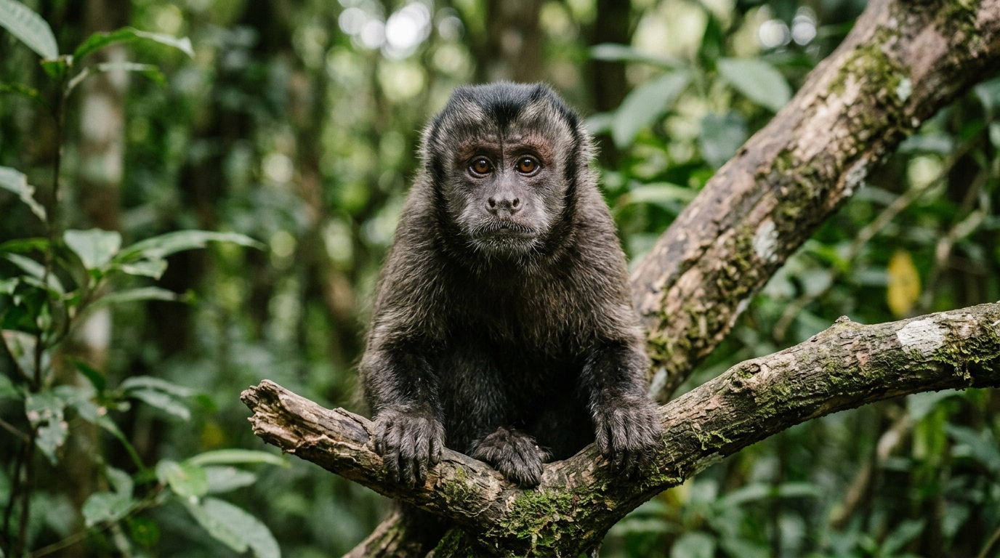
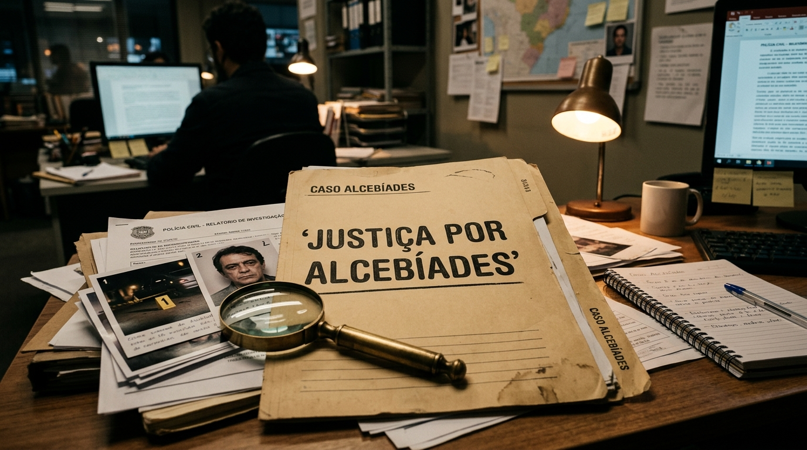

Conheça a história de Alcebíades, meu filho que tiraram a vida
A trajetória de amor, convivência e a perda irreparável: conheça os fatos, as contradições da captura e a exigência veemente de apuração criminal sobre as circunstâncias da morte do macaco Alcebíades.

Para quem observa de longe, ele era um macaco-prego. Para Marcell Moraes e todos que conviveram em sua intimidade, Alcebíades — carinhosamente chamado de "Bill" — era muito mais que um animal resgatado: era um filho de quatro patas, dotado de inteligência singular, sensibilidade e um laço de afeto incondicional que desafiava qualquer convenção.
A partida precoce e revoltante de Alcebíades não representa apenas uma perda irreparável para sua família humana; transformou-se no estopim de uma denúncia contundente contra a desumanidade, o preconceito e as graves lacunas no trato de animais silvestres sob guarda provisória no estado da Bahia.
O Começo de Tudo: Anos de Convívio, Afeto e Dignidade
A história de Alcebíades se entrelaça diretamente com a essência da luta que Marcell Moraes travou por mais de duas décadas em favor dos animais. Vítima inicial do tráfico e da degradação ambiental, Alcebíades encontrou nos braços de Marcell o acolhimento, a nutrição balanceada e os cuidados veterinários que lhe garantiram uma vida saudável e serena ao longo de anos.
Ele não vivia isolado em uma jaula fria; participava da rotina, reconhecia a voz de seu tutor, expressava sentimentos e construiu uma relação de profunda confiança. Era o símbolo vivo de que todo ser senciente é capaz de retribuir o amor quando tratado com respeito.
"Ele não era só um animal. Era meu filho, comia comigo, dormia ao meu lado, entendia meus momentos de dor e de alegria. Tiraram a vida dele covardemente, e eu não vou sossegar até que os responsáveis paguem perante a Justiça!"
Os Fatos de Outubro de 2026: A Fuga e o Momento de Tensão
Em outubro de 2026, um incidente inesperado deu início ao pesadelo. Alcebíades conseguiu sair do imóvel e adentrou residências vizinhas em um condomínio na capital baiana. Desorientado e assustado com a movimentação, o pequeno primata não representava risco letal premeditado, mas tornou-se alvo de pânico e intervenções precipitadas.
Relatos apontam que, durante o período em que esteve fora do ambiente seguro de sua casa, Alcebíades teve acesso a substâncias inapropriadas e potencialmente letais, incluindo álcool, solventes ou medicamentos em residências onde ingressou. Moradores e forças de segurança acionaram a polícia ambiental (COPPA) para a captura.
- Ingestão Forçada ou Exposição a Tóxicos: Apuração sobre o acesso do animal a bebidas alcoólicas e substâncias químicas durante a invasão no condomínio.
- Protocolo de Captura e Contenção: Avaliação se houve uso desproporcional de força ou administração inadequada de sedativos durante o resgate pela polícia ambiental.
- Condições do CETAS/Inema: Como um animal que chegou vivo e sob custódia de órgãos estatais veio a óbito no mesmo dia sem socorro emergencial intensivo?
- Laudo Toxicológico e Necropsia: A exigência de perícia técnica independente e isenta para constatar a verdadeira causa mortis.
A Captura e a Morte Brutal: As Contradições que Clamam por Resposta
Após a contenção do animal, Alcebíades foi entregue com vida e encaminhado ao Centro de Triagem de Animais Silvestres (CETAS), órgão sob gerência do Inema. Horas depois, veio a notícia devastadora: o animal estava morto.
A rapidez com que a vida de Alcebíades se extinguiu levantou imediatas suspeitas de envenenamento criminoso, omissão de socorro emergencial ou imperícia crassa na condução veterinária. Para Marcell Moraes, a tese de morte natural ou simples acidente não se sustenta diante de um animal forte e com acompanhamento constante.
"Nós queremos as imagens das câmeras, queremos os laudos de todos os medicamentos e substâncias encontradas no organismo dele. Quem colocou veneno ou álcool? Quem negligenciou o socorro imediato? Não vão enterrar essa história sem que a verdade venha à tona", afirma Marcell.
Fotos da Reportagem & Evidências do Caso
Documentação fotográfica, dossiê pericial e o acervo que comprova a trajetória e embasa os pedidos de investigação criminal.

Dossiê JurídicoInquérito & Pedido de Perícia
Documentação oficial protocolada solicitando necropsia independente, exames toxicológicos detalhados e apuração de crime contra a fauna.
Vida e Convivência Familiar
Registro da convivência de Alcebíades no seio familiar de Marcell Moraes, comprovando as condições de saúde física, nutrição e afeto.
Análise de Tóxicos e Substâncias
Requerimento judicial para rastrear venenos, fármacos ou álcool no sangue e tecidos de Alcebíades após a custódia do Estado.
Um Clamor que Não se Calará: Justiça por Alcebíades
A comoção pública gerada pela perda de Alcebíades atravessou Salvador e ecoou em todo o Brasil. Protetores independentes, ONGs e cidadãos indignados uniram-se à dor de Marcell Moraes, compreendendo que a vida de um animal não pode ser descartada com desdém burocrático.
"Se fizeram isso com o meu filho, que tinha visibilidade e alguém para defendê-lo, imaginem o que acontece diariamente com milhares de animais invisíveis nos centros de triagem e nas mãos de agressores impunes. A morte de Alcebíades não será em vão. Nós vamos até o fim!", conclui Marcell Moraes.
Manifesto: Justiça por Alcebíades!
Não aceitaremos impunidade ou explicações rasas. Junte-se a Marcell Moraes e à comunidade baiana na exigência de um inquérito rigoroso e da responsabilização de quem tirou a vida de Alcebíades.